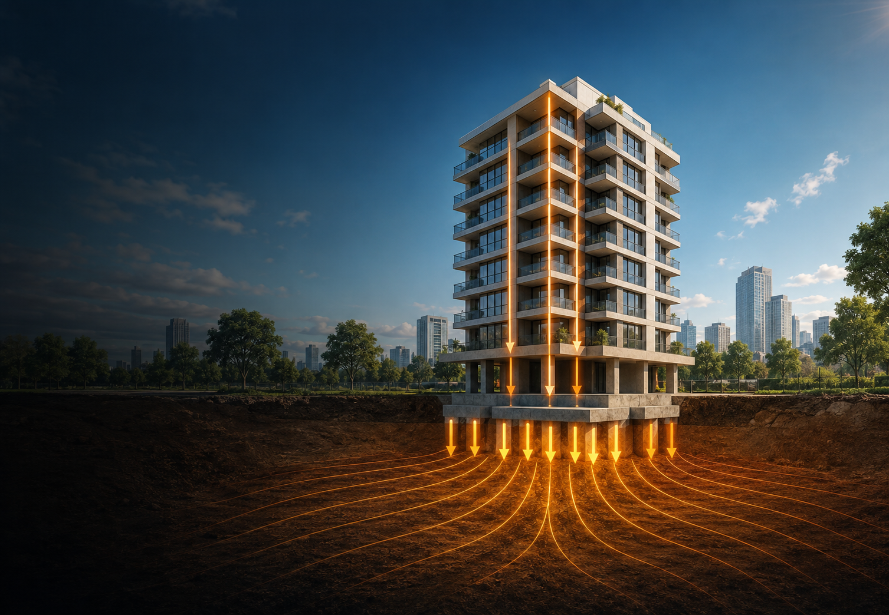

1. INTRODUCCIÓN
¿Qué ocurre bajo una edificación?
Aunque la estructura esté en reposo, su peso se transmite a la cimentación y luego al terreno.
Equilibrio ≠ ausencia de fuerzas
Las fuerzas se compensan, pero continúan actuando.